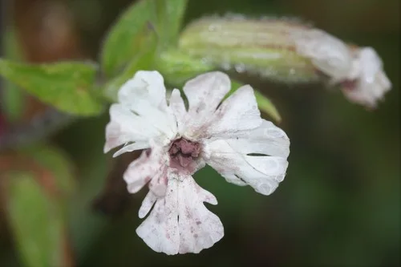
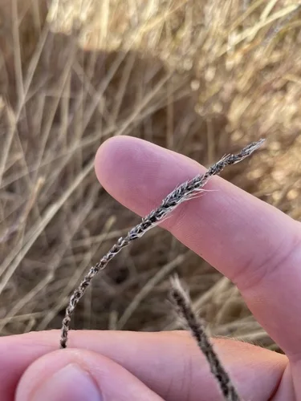
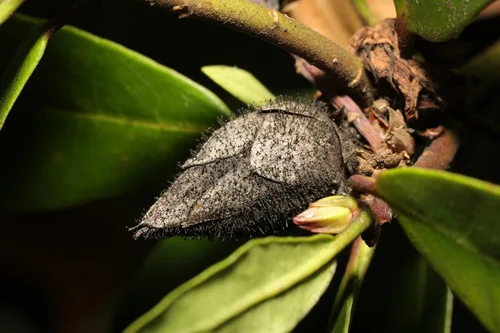
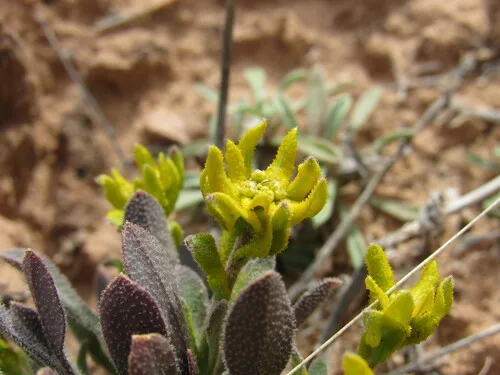

Flower problems

Soft, rotting flowersInspect overlapping petals for water-soaked tissue. Compare newly opened flowers with older blooms.

Dry, brown flowersIs browning confined to older blooms? Check unopened buds and the leaves on the same stem.

Yellow petals have lost their shapeCompare the limp petals with a younger bloom and check again in the cool morning before deciding whether to remove the flower.

Caterpillars on flowersLook behind petals and around buds for larvae, irregular bites or pellet-like droppings.

Beetles on flowersInspect fresh petal bites and the leaves below, then revisit the flower to look for the insect responsible.

Snouted beetles on buds and drooping flower budsLook just below a closed strawberry bud for a clipped stalk. Check for dangling buds and buds that have fallen beside the plant.

A new rosebud grows out of an open bloomAn apparently finished flower produces another bud through its centre. Following the base of the new bud helps tell true proliferation from overlapping flower stems.

Green leaflets replace parts of a roseWhen parts inside a normally coloured rose take the shape of leaves, inspect the next flush before deciding whether the change is persistent.

Daylily buds become squat and swollenA single daylily stem may carry both slender buds and stunted swollen ones. Opening one misshapen bud is a practical way to check for feeding larvae.

Brown knobbly clusters persist on ash treesDry brown masses that become conspicuous in winter can be old male flowers altered by mites. Check their shape and the health of the surrounding crown.

White campion flowers have violet-dusted anthersDark powder in a white flower is especially informative when it comes from the anthers. Compare a fresh bloom and a fading one on the same patch of campion.

Barley heads emerge as dark powderA barley head can appear dark just as surrounding heads emerge green. Inspect it early, before wind removes the powder and leaves only the central axis.

Dead rhododendron buds grow black bristlesCheck the buds that stayed closed after neighbouring rhododendrons flowered. A dead, grey-brown flower bud covered in tiny black pins is characteristic of bud blast.

Yellow leaf clusters mimic rockcress flowersA bright yellow patch on a spring rockcress may look like a flower from several steps away. Close inspection can reveal a rosette of altered leaves produced in association with a rust fungus.

A felted sleeve traps a grass flower headWatch a grass clump as it comes into head. On an affected shoot, a tightly fitting white or yellow-orange sleeve can surround the upper sheath where the flower head normally pushes through.

Rounded swellings replace mullein flower budsAmong the buds on a mullein spike, one or two may swell into conspicuous balls. Keeping an entire section of spike in view helps distinguish a bud gall from the plant’s normal sequence of flowers and capsules.

Dark, horn-like bodies replace individual grass seedsA few hard, dark projections may stand out among the pale grains of a mature grass head. When these structures take the place of individual seeds, consider ergot and keep the material separate from food or feed.

Small stalked cups rise from soil under a camelliaPart the litter after flowering. The cups in the photograph stand on the soil, not on flowers still attached to the shrub.

Tulip leaves show pale blotches and a bloom collapses in the clumpLook for distorted, scorched-looking leaves as well as petal spots. A drooping flower alone is insufficient to identify tulip fire.

A peony bud turns brown and shrivels before it opensThe brown bud is a dry shell, and most surrounding leaves are still green. Photograph round leaf spots separately if they appear.

Blossoms on a fruiting twig turn brown and stay attachedThe stalks of the brown flowers are still joined to the spur. Velvet cushions on fruit are a separate record, and this photograph shows no fruit.